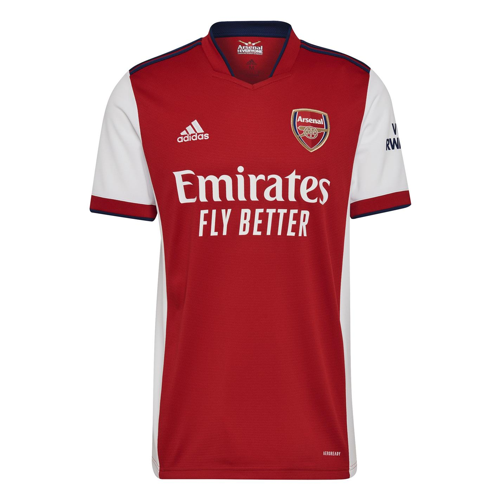
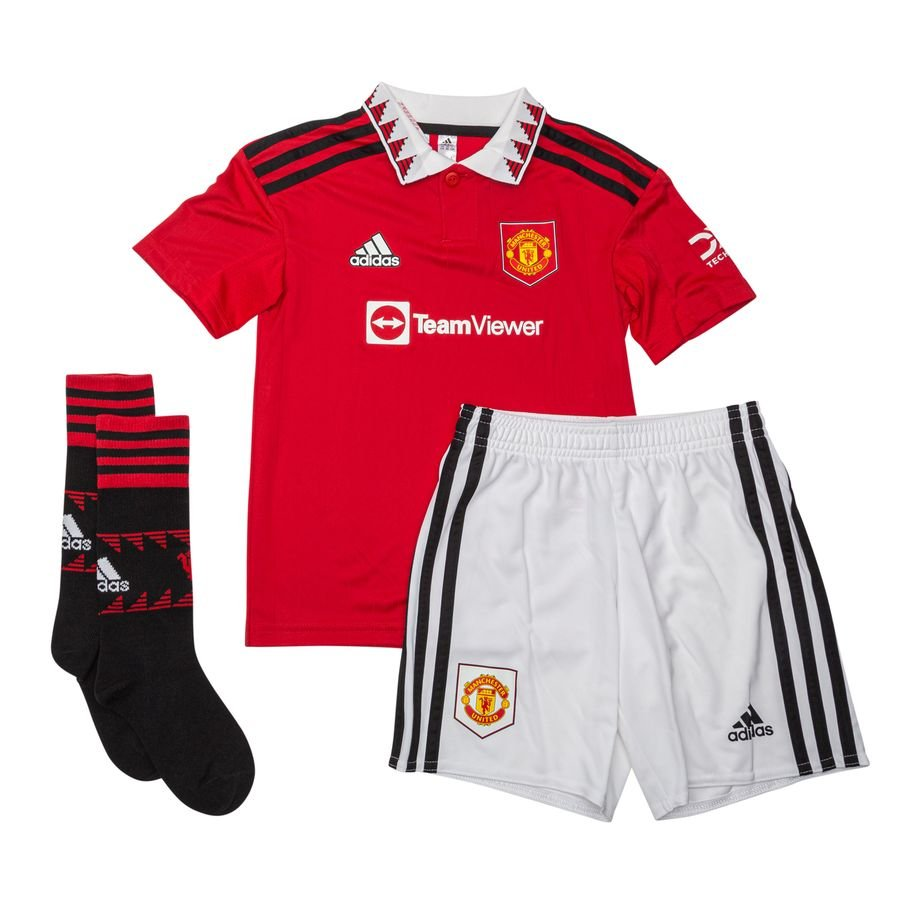

Le championnat d'Angleterre de football est la plus importante compétition de football en Angleterre. Lancée en 1888 par la Football Association sous le nom de « Football League », la compétition laisse place en 1992 à la Premier League, transformée en Barclays Premier League de 2004 à 2016 avant de reprendre son appellation précédente.
L'équipe que l'on surnommes "Les Gunners", serait-ce leur année? L’Arsenal Football Club est un club anglais de football fondé le 1ᵉʳ décembre 1886 à Londres. Son siège est situé dans le borough londonien d'Islington, au nord de la capitale britannique.
Le Manchester City Football Club est un club de football anglais basé à Manchester et fondé en 1880 sous le nom de St. Mark's.

Le Manchester United Football Club est un club de football anglais basé dans le district de Trafford, à proximité de la ville de Manchester.
